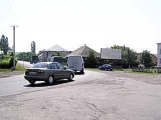
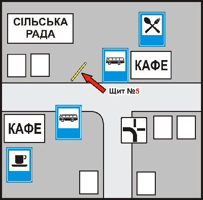

|
Ужгород
Мукачево
Берегово
Чоп
Свалява
Іршава
Нижні ворота
Назад
На головну
|
Розділ "Біг-борди, c.Кам'янське, Іршавського р-ну."
Щит №5.В'їзд в с. Кам'янське, перехрестя шляхів Виноградово,
Хуст, Берегово, Мукачево.
Характеристики: перехрестя шляхів.

В`їзд в с. Кам'янське, перехрестя, на якому розходяться магістральні напрямки на Мукачево, Виноградово, Хуст. Щит розташований в межах населеного пункту Кам'янське.
Розташування на мапі:

|